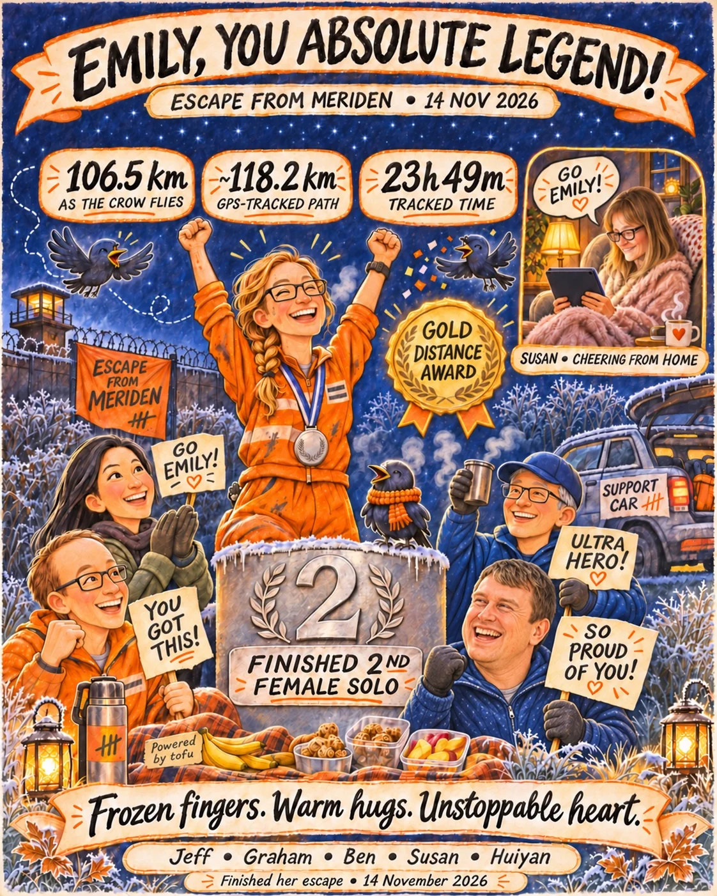

THE START
Some siblings just go for coffee.
Press play. Emily’s recorded little dot is ready for another adventure.
🐦⬛ Fellow escapees are warming their wings…
THE AFTER-ACTION REPORT · BIB 247
One freezing November. Twenty-four hours of determination. One very enthusiastic crow crew.
Press play. Emily’s recorded little dot is ready for another adventure.
THE LITTLE HELLOS THAT KEPT HER GOING
Tap a moment to jump to it. Stops are from crew check-ins; times are recorded, while durations are estimates from nearby GPS fixes.
OUR WANTED POSTER
Freezing fingers. Warm hugs. Unstoppable heart. ♡

Save Emily’s celebration poster ↓Save the original coordinates, crew moments and milestone timeline for Emily, or the 35 matching historical crow tracks. The files are JSON and are no longer connected to live tracking.
Download Emily’s route & momentsDownload fellow escapee crow paths*The recent pace uses nearby GPS fixes and can be distorted by gaps or stop-start movement. **Crew pause estimates are approximate GPS near-stationary clusters, not measured dwell times. GPS path is the sum of 712 transmitted segments (118.23 km), which can differ from a watch distance. The official final crow-flight award distance is 106.498 km. Eleven crew check-ins record when a point was marked “met”, not an exact arrival/departure time; supporter illustrations are an affectionate montage, not independently verified attendance at each stop. Susan cheered from home. Fellow escapees are 35 saved, public, time-stamped tracks with at least 15 km of route overlap within 750 m of Emily’s path, selected from 70 screened GPS tracks; other runners may be absent if they diverged farther or had unavailable tracking. No live locations are shown. Original records were archived 15 November 2026.